Staccato (Sémiotique TActile pour une CommuniCATion cOllective -- Tactile semiotics for collective communication)
A PRC (collaborative research project) project funded by ANR (French national research agency) program.

The project ran between January 2020 and June 2024. This project was led by LAM/d'Alembert (Paris, FR), and the partners were Junia (Lille, FR), IReMus (Paris, France), CRPMS (Paris, FR), and Praxiling (Montpellier, FR).
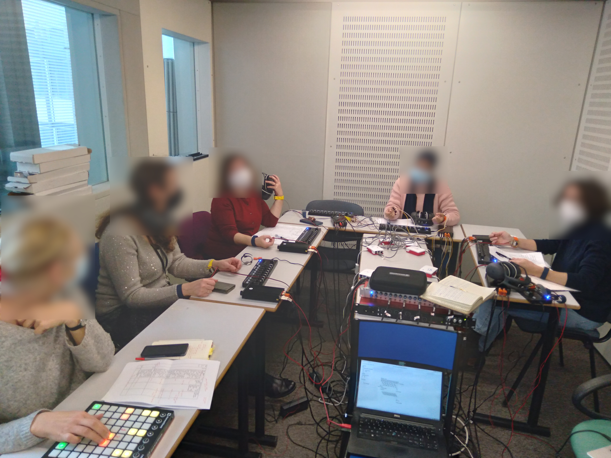
Within the frame of this project, I supervised Quentin Consigny's PhD thesis (together with Jean-Loïc Le Carrou, d'Alembert/Sorbonne Université), which started October 2020 and was defended in October 2023.
I also supervised the MSc. internships of Valentin Mouton (experimental electroacoustic characterization of electrodynamic vibrotactile transducers), Nathan Ouvrai (perceptual threshold measurements of vibrotactile signals), and Vianney Blaise (web interface for the simultaneous display of experimental data including video, sound, text transcriptions, and vibrotactile signals).
 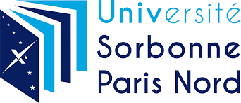
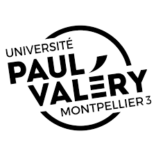
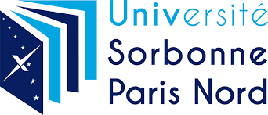
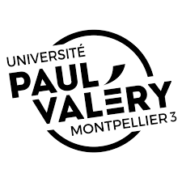
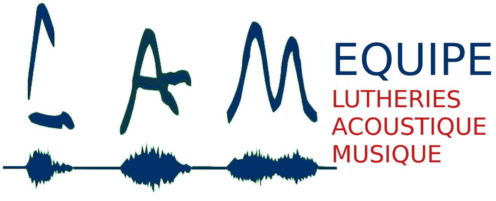
 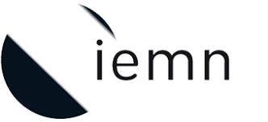
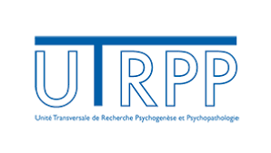
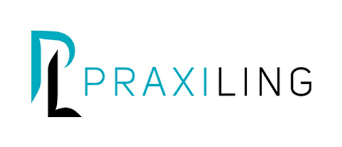
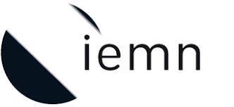
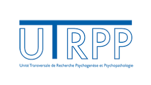
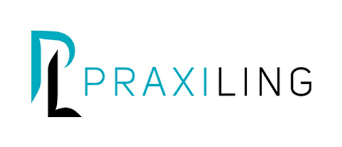